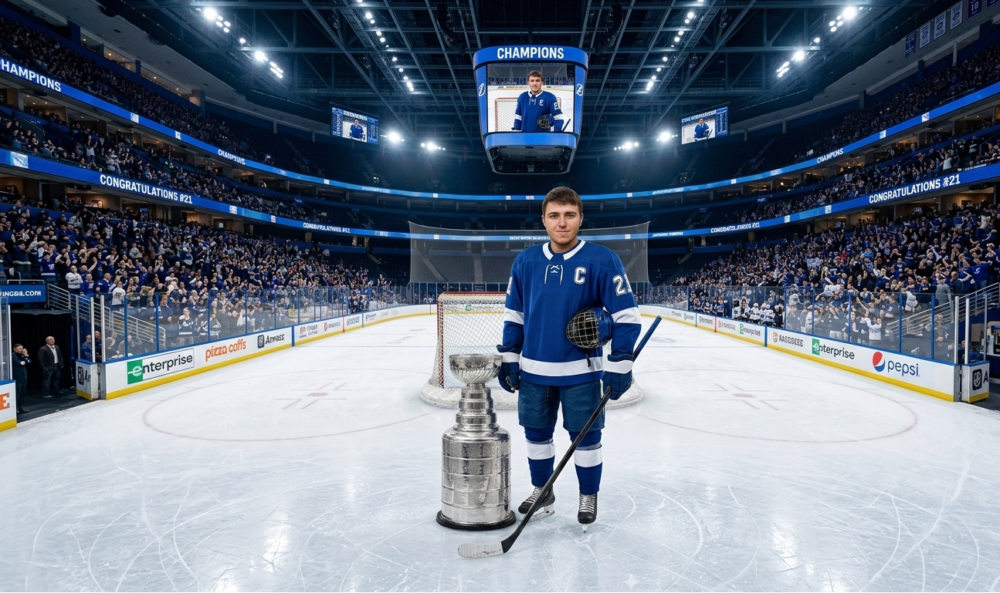

Османов Андрей Юрьевич: Железный кулак ПТО

Расследование о том, как начальник ПТО совмещает руководство станцией с интенсивными тренировками.
НАУКА
Андрей Мотосов: Разрушитель легенд

Нажмите, чтобы открыть полное досье сотрудника в разделе Акушерство и хоккей.
СТИЛЬЮрий: Режим и Стиль
Нажмите, чтобы открыть полное досье сотрудника в разделе Спорт и животные.
ЭНЕРГИЯНикита: Охотник за ошибками
Нажмите, чтобы открыть полное досье сотрудника в разделе Вероника одобряет.
КУЛЬТУРАСтас: Магистр LEGO
Нажмите, чтобы открыть полное досье сотрудника в разделе AUTOCAD Haters.
НаукаДенис: Новый герой ПТО
Нажмите, чтобы открыть полное досье сотрудника в разделе ВУЗы.
ЛОЯЛЬНОСТЬАнтон: Имперские хроники
Нажмите, чтобы открыть полное досье сотрудника в разделе StarWars.